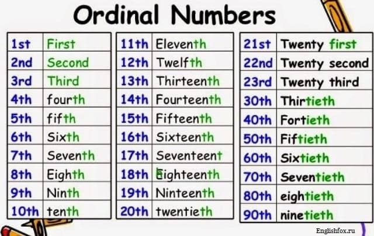
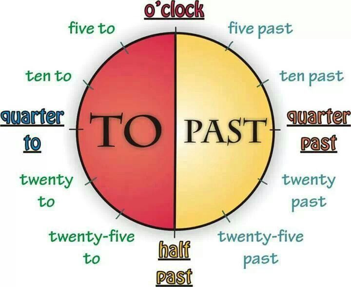

Ordinal Numbers
Time in English
It’s three o’clock. – Три часа.
It’s five past three. – «Пять минут после трех», то есть пять минут четвертого.
It’s five to three. – «Пять минут до трех», то есть без пяти три.
It’s a quarter past six. – «Четверть после шести», то есть четверть седьмого или пятнадцать минут седьмого.
It’s a quarter to six. – «Четверть до шести», то есть без четверти шесть или без пятнадцати шесть.
It’s half past four. – «Половина после четырех», то есть половина пятого.
It’s about eight. – Около восьми.
It’s almost eight. – Почти восемь.
Years
‹ 2000 - 1980 nineteen eighty
2000 - 2010 - 2005 two thousand and five
2010 >
1) - 2017 twenty secenteen
2) - 2017 two thousand and seventeen
Question Words
who? — кто? кому? кого?
whom? — кому?
what? — что? какой?
which? — какой? который из?
whose? — чей?
where? — где?
when? — когда?
what time? — во сколько? когда? в котором часу?
why? — почему? зачем?
how? — как ?
how many? — сколько?
how much? — сколько?
how far? — как далеко?
how long? — сколько? как долго?